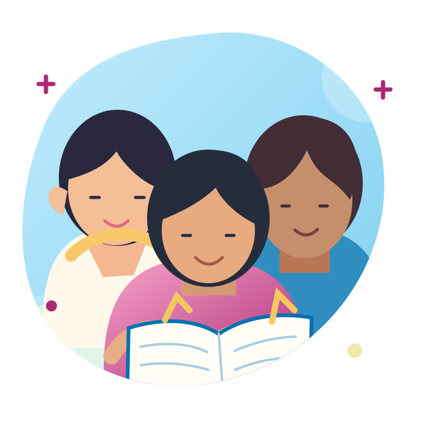

HEY, FUTURE MAKERS! ✳
Belajar seru.
Tumbuh jadi dirimu!
Setiap anak punya cara unik untuk bersinar. Temukan pengalaman belajar yang fleksibel, personal, dan bikin penasaran setiap hari.
Ruang aman untuk belajar, mencoba, dan tumbuh.

💡
Learning is
FUN!
FUN!
🌈
Joyful class
more confidence!
more confidence!
💗
Little steps
Big dreams!
Big dreams!
Paket A/B/CPendidikan Kesetaraan
HomeschoolingBelajar Fleksibel
Pendidikan yang lebih dekat dengan anak
✦ PKBM Terdaftar★ Akreditasi A✺ Paket A • B • C
✏️
🌈
📚
🪁
✨
100%ruang untuk
jadi diri sendiri
jadi diri sendiri
HALO! KENALAN YUK
Bukan sekadar sekolah. Ini ruang untuk bertumbuh.
Di Tunas Edukasi, kami percaya bahwa tidak ada dua anak yang belajar dengan cara persis sama. Ada yang suka bertanya, bergerak, menggambar, bereksperimen, atau mencoba berulang kali.
Kami hadir menemani setiap langkah itu melalui homeschooling dan pendidikan kesetaraan, dengan suasana yang suportif, menyenangkan, dan penuh perhatian.
Lebih dekat dengan kami ↗THE TUNAS WAY ✳Belajar itu harusnya
Belajar itu harusnya
bikin happy.
Setiap anak berhak punya ruang untuk eksplorasi, tumbuh, dan merasa nyaman menjadi dirinya sendiri.
🌈
Sesuai Ritmemu
Belajar dengan pendekatan yang lebih personal, tanpa perlu membandingkan perjalanan setiap anak.
↗💡
Bebas Bereksplorasi
Rasa penasaran adalah awal dari ide-ide besar. Yuk, coba hal baru dan kembangkan kreativitas!
↗🤝
Selalu Ada Teman
Perjalanan belajar jadi lebih ringan ketika keluarga, pendidik, dan anak saling mendukung.
↗🚀
Ready for Future!
Kenali potensimu lewat ilmu, karakter baik, dan keterampilan yang berguna untuk masa depan.
↗PILIH JALANMU ✦Satu tujuan, banyak cara
Satu tujuan, banyak cara
untuk bersinar.
Mau setara SD, SMP, SMA, atau lebih fleksibel melalui homeschooling? Cari program yang paling cocok untuk langkahmu.
01 / SETARA SD✿
✏️
Paket A
Mulai petualangan belajar dengan rasa ingin tahu, kemampuan dasar, dan kepercayaan diri.
Aku mau tahu! ↗02 / SETARA SMP✳
🎨
Paket B
Temukan minat, ekspresikan ide, dan terus berkembang menuju pribadi yang semakin mandiri.
Aku mau tahu! ↗03 / SETARA SMA✴
🚀
Paket C
Bangun fondasi menuju langkah berikutnya, dengan pengetahuan dan keterampilan yang relevan.
Aku mau tahu! ↗Tertarik belajar dengan pendekatan lebih fleksibel? Yuk, lihat homeschooling ↗
LEARN YOUR WAY ✳
Belajar nggak harus di satu tempat.
Belajar bisa lebih fleksibel dan tetap terarah. Homeschooling membuka ruang bagi keluarga untuk mengeksplorasi pendekatan yang cocok dengan kebutuhan anak.
Tanya Homeschooling ↗📖
🚀
🎨
✦
✳
Explore
MORE!
MORE!
YOUR NEXT CHAPTER ✦
Mulainya gampang, kok!
Nggak perlu bingung harus mulai dari mana. Kita jalani pelan-pelan, bareng-bareng.
💬
Yuk, cerita!
Bagikan kebutuhan dan harapan belajar anak kepada tim kami.
🧭
Temukan jalurmu
Diskusikan program dan pendekatan belajar yang sesuai.
📝
Rancang bersama
Pelajari persyaratan, proses pendaftaran, dan langkah belajar.
🌱
Let's grow!
Mulai pengalaman belajar yang penuh makna dan semangat.
PUNYA PERTANYAAN?
Masih penasaran? Wajar banget!
Kami siap membantu keluarga mengenal pilihan pendidikan yang lebih pas. Ini beberapa hal yang sering ditanyakan.
Apa perbedaan Paket A, B, dan C? +
Paket A merupakan pendidikan kesetaraan setara SD, Paket B setara SMP, dan Paket C setara SMA. Konsultasikan jenjang yang sesuai dengan kebutuhan peserta didik.
Apakah homeschooling bisa untuk anak saya? +
Pendekatan homeschooling dapat dibahas sesuai kebutuhan dan kondisi keluarga. Tim Tunas Edukasi akan membantu menjelaskan pilihan, pendampingan, serta ketentuan pendidikan yang berlaku.
Apakah ijazah pendidikan kesetaraan diakui? +
Ijazah pendidikan kesetaraan yang diterbitkan sesuai ketentuan pemerintah diakui setara dengan jenjang terkait. Persyaratan masuk lembaga tujuan dapat memiliki ketentuan masing-masing.
Bagaimana biaya dan jadwalnya? +
Biaya, ketersediaan kelas, jadwal, serta persyaratan bisa ditanyakan langsung ke tim Tunas Edukasi melalui bagian konsultasi.
Bagaimana cara berkonsultasi sebelum mendaftar? +
Isi formulir di bawah untuk menyiapkan email konsultasi. Kami belum memasang layanan pendaftaran online pada prototype ini.
LET'S START SOMETHING GREAT!
Petualangan baru dimulai dari satu cerita.
Masih memilih program yang tepat? Ceritakan kebutuhanmu. Kami senang membantu keluarga mengenal Tunas Edukasi.
👋
Halo, kenalan yuk!
Boleh tanya apa saja tentang program belajar.